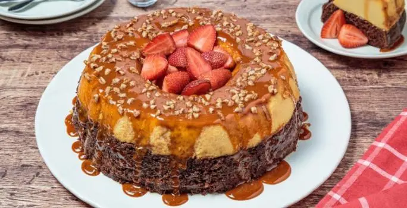

Pastel de moka
un pastel de moka que te encantará, es una receta que deberias de probar almenos una vez en tu vida, llena de delicias y sabores
CONSEJO NUTRICIONAL
El café aporta antioxidantes a la dieta.
CONSEJO CULINARIO
Recuerda que debes cubrir perfectamente el molde con papel aluminio para evitar que el agua entre en contacto con la preparación.